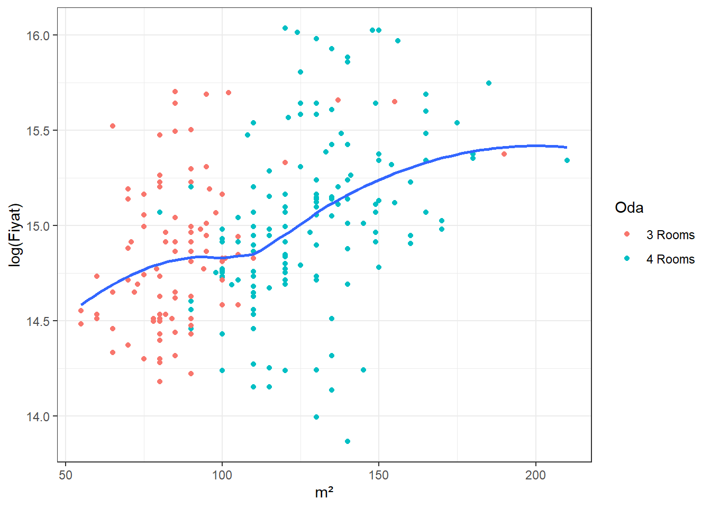

##
## Call:
## lm(formula = log(Fiyat) ~ Bina + Bulunduğu_Kat + `m²` + Oda +
## sehir, data = tum_satılık)
##
## Residuals:
## Min 1Q Median 3Q Max
## -1.35867 -0.21662 -0.01931 0.17853 1.00090
##
## Coefficients:
## Estimate Std. Error t value Pr(>|t|)
## (Intercept) 14.414295 0.203592 70.800 < 2e-16 ***
## Bina 0.113657 0.050540 2.249 0.02538 *
## Bulunduğu_Kat 0.014744 0.005351 2.755 0.00629 **
## `m²` 0.007246 0.001143 6.340 1.04e-09 ***
## Oda -0.105667 0.071161 -1.485 0.13881
## sehir -0.002483 0.046648 -0.053 0.95759
## ---
## Signif. codes: 0 '***' 0.001 '**' 0.01 '*' 0.05 '.' 0.1 ' ' 1
##
## Residual standard error: 0.3694 on 254 degrees of freedom
## Multiple R-squared: 0.2444, Adjusted R-squared: 0.2295
## F-statistic: 16.43 on 5 and 254 DF, p-value: 4.792e-14As seen in the summary table of the regression, there are 5 different explanatory variables. Two of these explanatory variables were insignificant. These variables are the “oda” variable, which shows the number of rooms the house has, and the “sehir” variable, which shows the city where the house is located.
We see that it is not possible to explain the price of the houses in the data set we have with the location of the house and the number of rooms it has. However, the remaining 3 variables have a significant effect on the price.
## Bina Bulunduğu_Kat `m²` Oda sehir
## 1.216953 1.067204 2.047292 2.257132 1.030577There is no multicollinearity problem since all the VIF values less then 10.
It is possible to say that as the floor of the house increases, the price of houses increases by 1.4%. In addition, you get away from the noise of the street as the apartment you own is located on the upper floors. You can have a better view and as long as you are not in the attic, you will not have a heating problem as you will be on the mezzanine. Lastly, we have seen in our previous regression that as the floor where the house is located increases, the rental income also increases. The increase in rental income is another factor that will increase the price of the house. Such reasons may cause the price of high-floor houses to be higher.
“Bina” is another significant explanatory variable. Apartments belonging to what we define as a young building (<15 years) are 11.3% more expensive than older apartments (16+ years). As younger buildings are safer, more comfortable and more useful, their demands are higher, which is a factor that increases their price. 
M^2 is among the explanatory variables found to be significant. The coefficient of the variable tells us that if the size of an apartment were to be increased by 1 square meter, the price of the apartment would increase by 0.7%. A positive relationship existing between m^2 and the price makes sense as one would expect a property with more space to be more expensive.
The two variables found to be insignificant in our model were Oda and sehir, representing the number of rooms in an apartment and the city in which the apartment is located, respectively. Unfortunately, since the coefficients in our model are not significant, we will not be interpreting these values. We would like to add that these variables resulting as insignificant goes against the predictions we had before conducting this research, since we expected these variables to have an impact of pricing.
Similarly to our rent model, we have also graphed the distribution of the residuals of our house price model and displayed it alongside a normal distribution. Although the residual curve has a higher peak compared to the normal distribution, we can say that our error distribution still shows similarities to a normal distribution. The mean of the residuals from this model is 4.51045e-18.